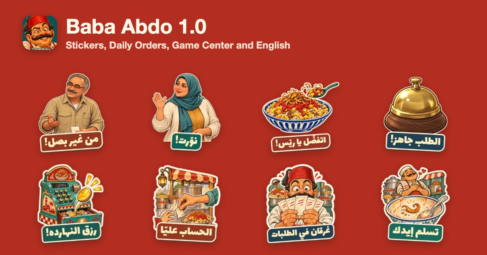

Release notes · Baba Abdo for iPhone · اقرأ بالعربية
Baba Abdo 1.0 release notes: stickers, daily orders and more
Baba Abdo 1.0 is on the App Store. Here is everything in it: the story week, the neighbors, the shop, the Daily Order, Game Center, and eight stickers you can send from Messages or WhatsApp.

Baba Abdo is a free koshary cooking game for iPhone. You run a small shop in a Cairo neighborhood, read each order, build the bowl and serve it. It plays in landscape, in Arabic or English, with no in-app purchases. For the story of how it was made, read the launch post.
A seven-day story
The story lasts seven in-game days, not seven days of waiting. Each day you open the shutter and serve the neighbors who come in. You can earn up to three stars a day, so 21 in the week.
16 neighbors visit the shop, and each one has a usual order: Amina, Hassan, Sayed, Mariam, Farouk, Ziad, Nadia, Mahmoud, Botros, Father Mina, Hany, Dina, Salwa, Reda, Karim and Umm Walid. Some days get busy. Each customer has a deadline, a quick bowl earns the full tip, and a customer who waits too long walks out.
Neighbors also ask for help with side requests, such as a lunch for the workshop and Mariam’s study group. You can help now or come back to them later.

Build the bowl
Six trays sit above the bowl: rice, pasta, lentils, chickpeas, tomato sauce and fried onions. Tap a tray to add a scoop. Daqqa (garlic vinegar) and shatta (chili) come in bottles. Check the ticket, then ring the bell to serve.
- Hold a ticket to read the full order. The clock stops while you read.
- Asking for help also stops the clock.
- An incorrect bowl shows what is missing or extra, so you learn each usual order.

Decorate the shop
Spend the day’s takings on nine additions for the shop. The money is in-game money, not real money.
- Tablecloth: 40
- Menu board: 50
- Window plant: 60
- Two wall prints: 60
- Enamel shop sign: 80
- Hanging lamp: 80
- Two wooden chairs: 90
- Wall fan: 140
- Table and two chairs: 180

After the story
- Open days: keep serving the neighbors and earn more for the shop.
- Daily Order: a new set of orders every day, from midnight to midnight UTC. The home screen shows when the next one comes.
- Personal Best: eight orders with no deadlines. The most correct bowls win, and the faster prep time breaks a tie.
- Free practice: no timer and no earnings. Your balance and story stay the same.

Game Center
Three leaderboards: Daily Order (net profit of the day), Personal Best (correct orders out of eight, then time) and Stars of the Week (stars across the seven story days).
Ten achievements: First Bowl, Three-Star Shift, A Week Full of Stars, Week’s End, Eight at Full Tip, Everyone Got Served, First Daily Order, Here Every Day (the Daily Order seven days in a row), Good Neighbor and A Shop of Your Own (buy every addition).
Eight stickers
Baba Abdo comes with a sticker pack called “From Baba Abdo” (من عند بابا عبده). The captions are in Egyptian Arabic, with Hassan, Amina, the bell, the cook and a full bowl of koshary.


- Messages: open a chat, tap +, then Stickers, and choose From Baba Abdo.
- WhatsApp: in the game, open the shop stickers and tap Add to WhatsApp.
- Anywhere else: tap a sticker to send it as a picture.
Share your takings
At the end of a story day, share your receipt as a picture or as text. Turn on Hide earnings if you want to share the day without the amount.
Language, time and privacy
- Play in Arabic or English. The neighbors still speak in Egyptian Arabic.
- Choose extra time in Settings if the deadlines feel too short.
- Labels for VoiceOver and support for larger text sizes.
- Gameplay analytics and crash reports help me fix problems. You can turn each one off in the game.
Questions
How do I use the Baba Abdo stickers in Messages? Open a chat in Messages, tap +, then Stickers. Choose From Baba Abdo and tap a sticker.
Can I add the Baba Abdo stickers to WhatsApp? Yes. Open the shop stickers in the game and tap Add to WhatsApp. You can also tap any sticker to send it as a picture.
What is the Daily Order? A new set of orders each day, from midnight to midnight UTC. Your net profit goes to the Daily Order leaderboard in Game Center.
Is the money in Baba Abdo real? No. You earn and spend in-game money only. The game is free and has no in-app purchases.